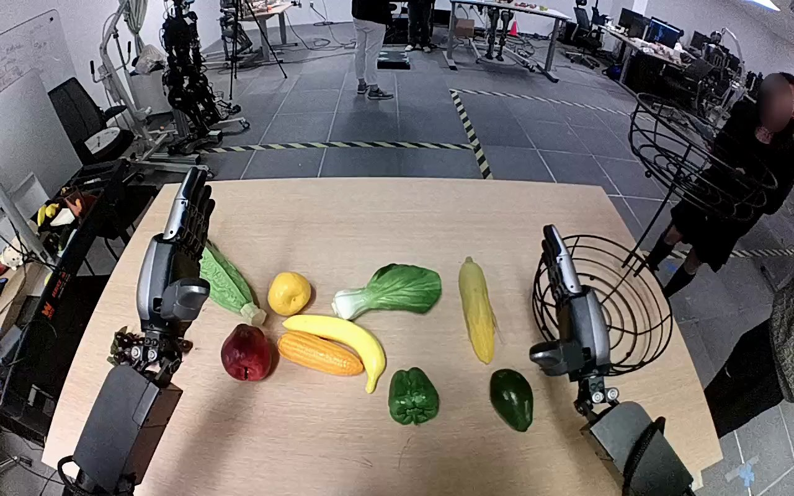

NVIDIA GR1 · 97
Video 97

Visual review action_review.json
{
"prompt_protocol": "humanoid_action_v1",
"prompt_provenance": "visually_authored_from_video_and_initial_frame",
"reviewed_contact_sheets": [
"sheet_001.jpg"
],
"inspected_frame_stride": 2,
"inspected_sampled_frame_count": 60,
"initial_scene": "A view forward over the robot’s two forearms shows several produce objects on a table. The dark green avocado is near the robot’s right hand, below and to the near side of an empty lower wire-basket tier. Both hands initially have extended fingers.",
"observed_sequence": [
{
"start_frame": 0,
"end_frame": 14,
"observation": "Both hands are raised over the table; the right hand starts moving toward the dark green avocado while the left remains stationary.",
"confidence": "high"
},
{
"start_frame": 15,
"end_frame": 40,
"observation": "Right arm lowers and brings its open hand around the avocado near the right-front area of the table.",
"confidence": "high"
},
{
"start_frame": 41,
"end_frame": 70,
"observation": "Right fingers close around the avocado; the object becomes partly occluded by the palm and fingers.",
"confidence": "high"
},
{
"start_frame": 71,
"end_frame": 100,
"observation": "Right hand holds and lifts the avocado clear of its initial tabletop location, adjusting the wrist while maintaining the grasp.",
"confidence": "high"
},
{
"start_frame": 101,
"end_frame": 116,
"observation": "Right arm carries the held avocado toward and over the lower tier of the wire fruit basket, positioning it within the basket rim.",
"confidence": "high"
},
{
"start_frame": 117,
"end_frame": 119,
"observation": "Right fingers open around the avocado as it moves down into the lower basket. At the final frame the avocado lies horizontally inside the lower tier and the hand remains open beside it.",
"confidence": "high"
}
],
"arm_hand_roles": {
"right": "Sole manipulating hand: approaches, grasps, lifts, carries and releases the avocado in the lower wire basket.",
"left": "Remains raised and open over the left side of the table throughout; does not grasp, support or stabilize the avocado or basket.",
"coordination": "Single-hand manipulation; no hand-to-hand transfer or human assistance is visible."
},
"anatomical_side_evidence": {
"description": "The camera looks forward over the robot’s own paired forearms, which extend from the near lower corners toward the tabletop. The hand at image right has its thumb toward the central workspace (image left), while the opposite hand’s thumb points centrally from image left. This forward-facing forearm arrangement and opposing medial thumbs establish the active image-right limb as anatomical right.",
"confidence": "high",
"limitations": "Shoulder attachments and torso are outside the image; side assignment uses the forward over-arm view and visible hand anatomy."
},
"uncertainties": [
"Exact contact with the basket wires is partly occluded by the open right fingers at the ending; the avocado is visibly inside the lower tier, and no later hand withdrawal or prolonged resting state is shown."
],
"annotation_discrepancies": [],
"evidence_frame_indices": [
0,
30,
60,
76,
94,
106,
110,
116,
118,
119
],
"selected_execution_status": "success",
"inspection_coverage": {
"contact_sheet_sampled_source_indices": "0, 2, 4, …, 118",
"complete_source_frame_range": [
0,
119
],
"native_source_initial_png_viewed": true,
"native_transition_and_final_frames_viewed": [
30,
60,
76,
94,
106,
110,
116,
118,
119
]
},
"terminal_state": "The avocado is visibly inside the lower wire-basket tier, lying more horizontally than during the grasp. The robot’s right fingers are open adjacent to it; the left hand remains raised and idle. No subsequent withdrawal is visible.",
"video_id": "97",
"dataset": "NVIDIA_GR1_100",
"dedicated_review_agent": "review_gr1_97",
"review_source_video": "NVIDIA_GR1_100/97/original/original.mp4",
"source_frame_count": 120,
"source_fps": 20.0,
"native_detail_frames": [
30,
60,
76,
94,
106,
110,
116,
118,
119
],
"world_model_prompt": "The robot uses its right hand to grasp the dark green avocado on the right side of the table and lifts it from the tabletop. It carries the avocado to the wire fruit basket's lower tier, lowers it inside, and opens its fingers to leave the avocado in the basket. Keep the camera fixed; preserve robot geometry, physically valid joint motion, and normal gripper opening and closing.",
"original_task_instruction": "Use the right hand to pick up green avocado from right side of table to lower level of wire fruit basket.",
"selected_segment": {
"start_frame": 0,
"end_frame_exclusive": 120,
"reason": "Complete original single-task reference; no cropping or trimming requested."
},
"source_video_sha256": "c993f999ce3ddb289b3bcd648634c6f3bb97c4807ae91bfbe44d36ef6660918c",
"review_completed_at": "2026-10-13T18:42:29.699332+00:00"
}